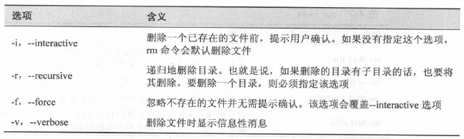

1. 文件相关命令
1.1. file
determine file type
- 确定文件类型
- 查看文件内容的简短说明
- Linux 系统中的文件名不需要反应文件的内容
file filename
1.2. cp
copy files and directories
复制文件和目录
两种使用方式
# 方式一
cp item1 item2 # 将单个文件或目录 item1 复制到文件或目录 item2 中
# 方式二
cp item... directory # 将多个 item (文件或目录) 复制进一个目录中
- 选项

- 示例
1.3. mv
move (rename) files
移动或重命名文件
两种使用方式
# 方式一
mv item1 item2 # 将文件(或目录) item1 移动(或重命名)为 item2
# 方式二
mv item... directory # 将一个或多个 item 从一个目录移动到另一个目录下
- 选项

- 示例
1.4. rm
remove files or directories
删除文件和目录
注意
- 删除后，无法恢复
- 与通配符一起使用时要特别小心
- 使用技巧
- 当与通配符一起使用时，可以使用 ls 命令预先对通配符做测试
- 测试没有问题后，将 ls 替换为 rm。
选项

- 示例
1.5. ln
make links between files
创建链接
两种使用方式
# 方式一
ln file link # 创建硬链接
# 方式二
ln -s item link # 创建符号链接。item 可以是文件也可以是目录